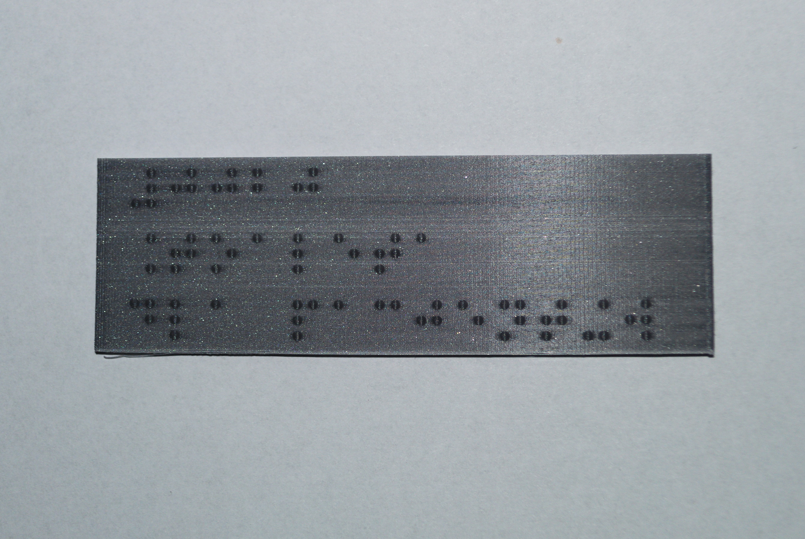
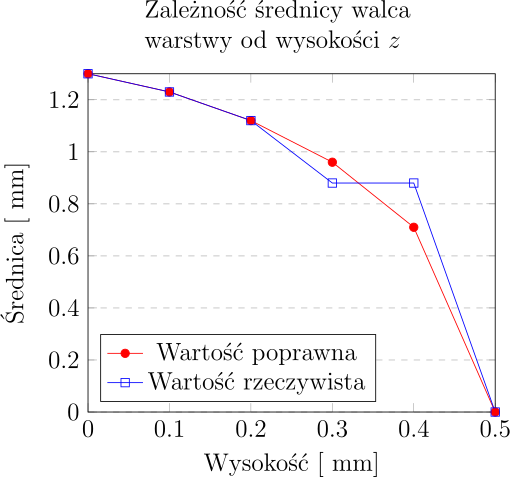
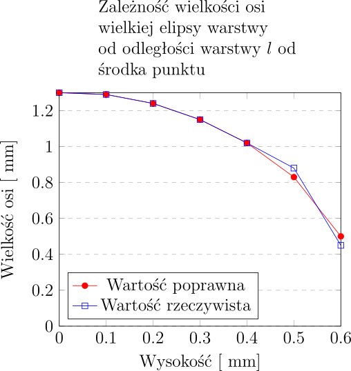
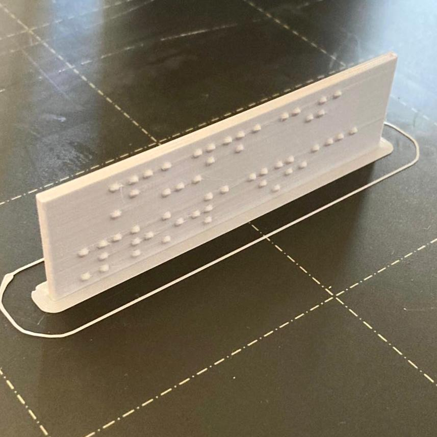
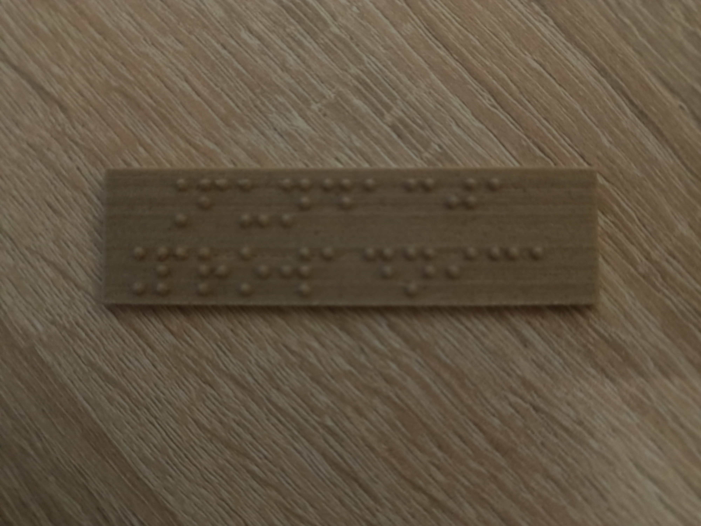

Poniższy dokument przedstawia wyniki badań dotyczących możliwości wykonywania oznaczeń w alfabecie Brajla (zwanym inaczej pismem punktowym) z wykorzystaniem druku 3d w technologii FDM. Badanym zagadnieniem jest odpowiednie odwzorowanie geometrii punktu tak, by napis był w pełni czytelny dla osób niewidomych. W pracy tej ujęte zostały modele matematyczne opisujące punkty Brajla oraz metodyka, która w trakcie testów mających miejsce od października 2021 roku została uznana za najbardziej obiecującą przez Zarząd Fundacji Prowadnica oraz niezależnych niewidomych testerów.
Celem niniejszego opracowania jest przedstawienie dokumentacji procesu i położenie fundamentów pod dalsze badania w tej dziedzinie. Osoby pragnące wykonać tabliczki lub inne elementy z oznaczeniami w alfabecie Brajla z wykorzystaniem druku 3d mogą znaleźć skrócony wykaz zaleceń na końcu niniejszej pracy.
Fundacja Prowadnica to organizacja, która za cel postawiła sobie, między innymi, badanie i promowanie wykorzystywania nowoczesnych technologii na rzecz osób niewidomych. Jednym z obszarów tych działań jest implementacja druku 3d w tworzeniu oznaczeń, makiet, materiałów edukacyjnych, gier planszowych i innych akcesoriów wykonywanych dla osób z dysfunkcją wzroku. W ramach tych eksperymentów zbadana została także możliwość wykorzystania druku 3d do tworzenia oznaczeń w alfabecie Brajla.
Celem było sprawdzenie, czy możliwe jest tworzenie jakościowo akceptowalnych tabliczek z brajlowskimi podpisami z wykorzystaniem technologii FDM jako alternatywy do obecnie stosowanych, znacznie kosztowniejszych metod, a także samodzielne ich wykonywanie bezpośrednio przez instytucje, które zgłaszają zapotrzebowanie na tego typu oznaczenia.
W pracy tej zostały ujęte wyniki eksperymentów prowadzonych od października 2021 roku. Ponieważ stosowana w Fundacji technologia jest rozwijana w sposób ciągły, jeśli w badaniach wykazane zostaną dodatkowe czynniki lub zajdą istotne dla procesu zmiany, praca zostanie odpowiednio przeredagowana i wzbogacona o nowe treści.

FDM (Fused Deposition Modelling) to technologia druku 3D, w której model
przestrzenny jest tworzony poprzez nakładanie kolejnych warstw topionego
termoplastu. Proces drukowania odbywa się za pomocą dyszy, która przemieszcza się
wzdłuż osi
W związku z tematyką poruszaną w dalszej części niniejszego opracowania, warto rozważyć kwestię geometrii kształtów, które są wykonywane za pomocą technologii FDM.
Dysza drukarki 3d, uniesiona tuż nad powierzchnią stołu lub niższej warstwy,
przepuszcza pewną ilość materiału, który formuje kształt zbliżony do walca o średnicy
Należy tu zauważyć, że w związku z geometrią druku 3d linia modelu nie
jest prostopadłościanem, ale jego przybliżeniem złożonym z pewnej ilości
walców. Efektem jest zaokrąglony kształt krawędzi tej linii. Zjawisko
to jest tym wyraźniejsze, im większa jest szerokość ścieżki ekstruzji
Naturalnym następstwem podziału modelu na warstwy jest także zmniejszenie
szczegółowości pionowej. W rezultacie model zachowuje jedynie szczegółowość
Alfabet Brajla (Alfabet Braille’a) to wypukły zapis tekstu stosowany
przez osoby niewidome. Pojedynczy znak tego alfabetu zawiera pewną
kombinację punktów ułożonych w dwóch kolumnach i trzech rzędach, tak zwany
sześciopunkt [2]. Punkty te w zapisie papierowym są wytłaczane dłutkiem lub
na specjalnej maszynie brajlowskiej. Sześciopunkty następnie organizuje
się w wyrazy i wiersze analogicznie do pisma czarnodrukowego. Należy
tu podkreślić, że ze względu na ograniczoną liczbę kombinacji punktów
W ramach badań wykonanych zostało ok. 1000 tabliczek, z których 585 zostało przekazanych do użytku w budynkach użyteczności publicznej.
Badane były tabliczki prostokątne o grubościach
Drukarki 3d wykorzystywane podczas badań:
Wykorzystywane filamenty:
Jeśli nie zaznaczono inaczej, stosowane były następujące ustawienia druku:
W zagadnieniu druku 3d punktów Brajlowskich kluczowym problemem jest
geometria pojedynczej kropki. Osoby niewidome odczytują tekst brajlowski
poprzez dotykanie liter palcami. Oznacza to, że poprawne ukształtowanie i
wykonanie punktów jest niezbędne dla uzyskania czytelności i użyteczności
napisu. Jak wspomniano powyżej, początkowo punkty brajlowskie
były wykonywane z użyciem dłutka o zaostrzonej krawędzi, którym
naciskano na papier umieszczony na odpowiedniej tabliczce z niewielkimi,
walcowymi otworami. Tabliczkę profilowano w taki sposób, by punkt
stał się wyraźny w dotyku na powierzchni kartki, ale by sama kartka nie
została przebita. Taki punkt ma zaokrąglony kształt, nie jest walcem,
stożkiem czy kulą. Punkt brajlowski definiowany jest przez średnicę podstawy
Można przyjąć, że punkt brajlowski jest figurą powstałą poprzez obrót półelipsy o
półosiach
Równanie tej elipsoidy przyjmuje następującą postać:
Dla każdego
gdzie
Komputerowe uzyskanie punktu możliwe jest na dwa podstawowe sposoby.
Dana jest półkula o środku w punkcie
Dla każdego
gdzie
Poprzez wykorzystanie skalowania można w łatwy sposób uzyskać pożądaną geometrię punktu brajlowskiego. Wystarczy przyjąć współczynniki skalowania
Ponieważ dla
Uzyskujemy wzór skalowania
gdzie
Poniżej znajduje się przykładowa implementacja w języku OpenSCAD.
module brailleDot(d, h) {
scale([1, 1, h/d])
difference() {
sphere(d=d);
translate([0, 0, -d/2])
cylinder(d=d, h=d/2);
}
}
Ponieważ jakość powyższego przekształcenia jest silnie związana z przyjętą
rozdzielczością skalowania i mało zoptymalizowana, można również
ująć punkt brajlowski jako zbiór punktów kuli o środku w punkcie
Dana jest kula o promieniu
Dane jest koło o promieniu
Wytyczone zostały cięciwa
Twierdzenie o Cięciwach [6] mówi, że
Jeśli w okręgu 2 cięciwy
Możemy stąd wyznaczyć długość odcinka
Zatem punkt Brajlowski może być stworzony jako fragment kuli
Równanie tego punktu przyjmuje postać:
Dla każdego
gdzie:
Powyższa formuła będzie stosowana celem uproszczenia obliczeń w dalszej części niniejszego opracowania, ale należy pamiętać, że obydwie zaprezentowane strategie są tożsame.
Poniżej znajduje się przykładowa implementacja w języku OpenSCAD.
function calculateDotSphereRadius(d,h) =
(d^2 / (4*h) + h) / 2;
module brailleDot(d, h) {
rk = calculateDotSphereRadius(d, h);
difference() {
translate([0, 0, h-rk])
sphere(r=rk);
translate([0, 0, h-rk*2])
cylinder(r=rk, h=rk*2-h);
}
}
Prócz wymiarów odnoszących się do samego punktu, czcionka
Brajlowska definiuje także odległość między punktami w jednym znaku
(
Przykładowo w Brajlu słowo ”test” ma postać: .
Poniższy kod w języku OpenSCAD pozwoli na stworzenie tego napisu.
module writeBraille(letters, o=2.5, w=6.0, l=10.0, d=1.3, h=0.5) {
for(line = [0: len(letters)-1]) {
translate([0, -l*line-l/2, 0]) {
for(char = [0: len(letters[line])-1]) {
translate([char*w+w/2, 0, 0])
letter = letters[line][char];
for(point = [0: len(letters[line][char])-1]) {
x = floor(point/3)*o - o/2;
y = floor((point-1)%3)*o - o;
translate([x, y, 0])
brailleDot(d, h)
}
}
}
}
}
// Przyjmuje się, że w Brajlu punkty numerowane są od góry: (1, 2, 3 - pierwsza kolumna; 4, 5, 6 - druga)
letters = [[[2,3,4,5], [1,5], [2,3,4], [2,3,4,5]]];
writeBraille(letters);
Przez
Zależność średnicy walca składającego się na punkt
gdzie
Na poniższym wykresie zaznaczone są poprawne średnice walców czerwona
linia) i rzeczywiste średnice niebieska linia) na kolejnych warstwach dla

Powstały kształt nie jest sferyczny. W skutek niskiej rozdzielczości przy tak
małej skali w wyniku otrzymuje się nieregularny, szpiczasty stożek. Efekt ten jest
jeszcze potęgowany przez wyciekanie nadmiarowego filamentu z dyszy.
Uzyskiwany tym sposobem Brajl jest kłujący, nieprzyjemny w dotyku i
trudny do odczytywania. Z powodu szerokiej ścieżki ekstruzji, zmniejszanie
wysokości warstwy nie ma wpływu na zaistniałą sytuację, od punktu
Sytuacje może poprawić stosowanie dysz o niższej średnicy, co
spowoduje mniejszą szerokość ścieżki ekstruzji, ale dopiero wartości
Sytuacja przedstawia się zupełnie inaczej, gdy punkty drukowane są prostopadle do powierzchni stołu. W tym przypadku kolejne warstwy stają się półelipsami.
Dla uproszczenia rozważmy geometrię punktów w takim samym układzie
współrzędnych jak poprzednio, czyli niech wysokość punktu odpowiada osi
Należy wyznaczyć półosie tej elipsy. Elipsoida punktu dana jest wzorem
Równanie opisujące elipsę stanowiącą przekrój w osi
Zatem, półosi elipsy w odległości
,
gdzie
Przenosząc powyższe w geometrię druku, należy zauważyć, że wartość
Na poniższym wykresie zaznaczone są poprawne osie elips czerwona
linia) i rzeczywiste osie niebieska linia) na kolejnych warstwach dla

Odwzorowanie geometrii punktu Brajlowskiego nawet dla standardowej szerokości ścieżki jest o wiele wierniejsze, niż w poprzednim przykładzie. Można je jeszcze bardziej zwiększać, poprzez zmniejszanie wysokości warstw.
Zgodnie z eksperymentami wykonywanymi przez Fundację Prowadnica od
października 2021 roku, Brajl staje się czytelny już przy wysokości warstwy
Dodatkowym atutem tej geometrii jest zwiększona odporność punktów na ścieranie - nie stanowią one osobnej warstwy, ale są częścią warstw modelu, na którym są umieszczone.

Warto zauważyć, że choć na czytelność Brajla największy wpływ ma jego orientacja względem płaszczyzny druku, rozważany model elipsoidy nie w pełni oddaje wygląd prawdziwego, tłoczonego Brajla. W rzeczywistości kształt punktów jest nieregularny. Zaprezentowany model matematyczny Brajla doskonale nadaje się do oznaczeń i tyflografik. W trakcie prowadzonych eksperymentów udało się jednak uzyskać nawet wierniejszą geometrię. Wpływ na to ma dobór odpowiedniego materiału. Testowane były między innymi filamenty składające się z włókien drewnianych. Charakterystyką tych materiałów jest niejednorodna struktura, która sprawia, że grubość ścieżek jest nieregularna. Wytwarzany w ten sposób Brajl okazywał się o wiele bardziej zbliżony do punktów umieszczanych na kartce metodami tradycyjnymi.

Wraz z temperaturą dyszy zwiększa się nadmiarowe wyciekanie materiału [9].
Gromadzący się w ten sposób materiał na punktach Brajlowskich, niezależnie od
przyjętej geometrii, powoduje pogorszenie ich właściwości geometrycznych. W
trakcie testów wykorzystany został polilaktyd produkcji firmy ”Prusa Research”
(”Prusament PLA”) oraz ”Fiberlab S.A.” (”Fiberlogy FiberSilk”). Wykonanych
zostało po 10 tabliczek z każdego z tych materiałów w temperaturach:
Ocena wpływu warunków zewnętrznych na jakość samego punktu jest trudna, ale najprawdopodobniej wpływ ten pozostaje pomijalny z powodu bardzo niewielkich rozmiarów pojedynczej kropki. W rzeczywistości jednak wpływ na sam punkt, szczególnie podczas druku prostopadłego, mają nieprawidłowości powstałe w modelu, na którym jest on umieszczany - wypaczenia, problemy z adhezją, niedostateczna lub nadmierna ekstruzja powodują deformację, przesunięcia lub nieczytelność Brajla. Materiały podatne na wypaczenie, takie jak terpolimer akrylonitrylo-butadieno-styrenowy (ABS), poliamidy lub poliwęglany powinny być drukowane w odpowiednich dla nich warunkach. Brajl pozostaje też podatny na niedostateczne chłodzenie modelu, w przypadku druku cienkich tabliczek z polimerów topionych w wysokich temperaturach przy nadmiernej prędkości druku zaobserwować można rozlanie kropki Brajla na zbyt dużym obszarze.
Prędkość druku zazwyczaj ma ogromny wpływ na jakość. W przypadku
Brajla jest podobnie. Zazwyczaj jednak w druku FDM stosuje się bardzo
zaniżoną prędkość obrysów w stosunku do reszty modelu. Ponieważ w druku
Brajla prostopadle do powierzchni stołu cała wypukła część kropki jest
obrysem, możliwe jest poprawne drukowanie modeli z nawet bardzo dużą
prędkością wypełnienia. Należy mieć jednak na względzie, że błędy w
samym modelu mają wpływ także na Brajla, szczególnie w przypadku
deformacji części. Dodatkowo tabliczki o niskiej grubości zazwyczaj są
zbyt małe, by posiadać rzeczywiste wypełnienie, tabliczka o grubości
Jakość modeli wytwarzanych metodą FDM można znacznie poprawić przez różnego rodzaju obróbkę, jednym z przykładów jest wygładzanie chemiczne. Proces ten polega na umieszczeniu wykonanego modelu w oparach rozpuszczalnika (czasem wręcz zanurzeniu lub pokryciu go nim). W rezultacie poprzez częściowe rozpuszczenie materiału można zniwelować widoczność i rozgraniczenie pojedynczych warstw [10].
Doświadczenie polegało na umieszczaniu tabliczek (Brajlem do dołu) na pewnej
wysokości szklanego naczynia w kształcie stożka. Na dole naczynia znajdowało się
Okazało się, że wygładzanie chemiczne nadaje równy, sferyczny kształt
punktom brajlowskim, nawet tym wykonanym równolegle do powierzchni stołu.
Kluczowe jest jednak odpowiednie dobranie czasu - zbyt krótkie wygładzanie nie
daje zadowalających efektów, a zbyt długie powoduje całkowitą utratę punktów i
tabliczki. Wyniki doświadczeń prezentowały się następująco, dla tabliczek o grubości
| Substancja | Efekt po 5 minutach | Efekt po 8 minutach | Efekt po 12 minutach | Efekt po 15 minutach | Efekt po 20 minutach | Efekt po 25 minutach |
| ABS, aceton | Nadanie lekkiego połysku, brak wyraźnych zmian | Nadanie wyraźnego połysku, brak zmian geometrii Brajla | Kropki Brajla lekko wygładzone | Kropki Brajla w kształcie sferycznym | Kropki Brajla zbyt wygładzone, trudne do odczytania | Kropki Brajla niemożliwe do odczytania |
| PLA, MEK | Brak obserwowalnych zmian | Lekkie wygładzenie linii, brak zmian geometrii punktów | Kropki Brajla lekko wygładzone, obserwowane deformacje tabliczki | Kropki Brajla w kształcie sferycznym, tabliczka wyraźnie zdeformowana | Tabliczka wyraźnie zdeformowana, utrata kropek | Tabliczka wyraźnie zdeformowana, utrata kropek |
| PLA, dichlorometan | Kropki Brajla lekko wygładzone | Kropki Brajla w kształcie sferycznym, linie wyrównane | Kropki Brajla trudne do wyczucia, tabliczka bardzo wygładzona | Tabliczka ulega deformacji | Tabliczka uszkodzona | Tabliczka uszkodzona |
W testowanej konfiguracji idealne czasy wynosiły 15 minut dla acetonu oraz 8 minut dla dichlorometanu. Wadą procesu jest jednak nadmierne wygładzenie wykończenia punktów, co utrudnia ich odczytanie na przykład na zewnątrz w zimniejsze dni. Dlatego decyzja o wykorzystaniu tej metody powinna być uzależniona od przeznaczenia oznaczeń.
Warto też wspomnieć, że wygładzanie chemiczne pozwala na uzyskiwanie przezroczystych wydruków z materiałów takich jak polimetakrylan metylu (PMMA), dzięki czemu możliwe jest stosowanie poddruku poniżej warstw przezroczystego Brajla.
Wytrzymałość oznaczeń wykonywanych w technologii FDM jest uzależniona od
wielu czynników, ale najważniejszym z nich jest dobór odpowiedniego materiału.
Przykładowo polilaktyd (PLA) charakteryzuje się temperaturą zeszklenia już w
granicy
W przypadku geometrii punktu drukowanego prostopadle do powierzchni stołu, kropki stają się elementem obrysu, którego przedłużeniem jest element, na którym nanoszone są oznaczenia. W rezultacie nie występuje efekt osłabienia materiału na łączeniu warstw.
W 2021 roku Fundacja Prowadnica zorganizowała konkurs Właściwe Drzwi, w ramach którego darmowo wykonanych zostało 585 tabliczek z materiału ”Prusament PLA” firmy ”Prusa Research”, przekazanych nieodpłatnie do 10 budynków użyteczności publicznej, w tym dla szpitala, muzeum, urzędów czy placówek edukacyjnych. Tabliczki te były instalowane w okresie od grudnia 2021 roku do sierpnia 2022 roku. Na kwiecień 2023 roku nie stwierdzono wypaczenia lub uszkodzenia żadnej z nich. Stan tych oznaczeń będzie dalej monitorowany.
W 2019 roku naukowcy z Uniwersytetu w Hamburgu w Niemczech zaproponowali
zmianę podejścia do druku FDM [12]. Jak wyjaśniono na początku opracowania,
druk FDM polega na umieszczaniu kolejnych warstw topionego termoplastu.
Zaproponowane nowe podejście, nazwane drukiem nieplanarnym polega na
wykorzystaniu rzeczywistych, trójwymiarowych ruchów dyszy drukarki 3d
do uzyskania gładkich, okrągłych powierzchni. Jest to osiągane poprzez
wykonywanie jednoczesnych ruchów dyszy we wszystkich trzech osiach.
Ta koncepcja może potencjalnie pozwolić na znaczną poprawę jakości
drukowanego Brajla, w a/szczególności w układzie równoległym do powierzchni
stołu. Znacznie ułatwiłoby to wykorzystanie druku FDM do tworzenia
dużych makiet tyflograficznych. W takiej sytuacji punkt Brajlowski mógłby
być tworzony z perspektywy dwuwymiarowej jako koło o średnicy
Wysokość
Kwestią dalszych badań pozostaje zagadnienie rozdzielczości.
W szczególności elipsoida punktu podzielona zostanie na
Wydaje się prawdopodobnym, że druk nieplanarny, o ile odnajdzie zastosowanie w
wykonywaniu Brajla, podobnie do druku równoległego będzie wymagał dysz o małej
średnicy:
Istnieje również technika zwiększania gładkości modeli poprzez ich pokrywanie różnego rodzaju żywicami epoksydowymi [13]. Jest to alternatywa wygładzania chemicznego użyteczna szczególnie w przypadku polimerów, których wygładzanie wiąże się z użyciem niebezpiecznych, trudnych do uzyskania lub drogich substancji. Dodatkowym atutem jest zwiększona odporność modeli na warunki zewnętrzne, szczególnie tych wykonanych z filamentów o niskiej odporności jak polilaktyd (PLA).
Metoda ta wydaje się obiecująca w przypadku Brajla, szczególnie drukowanego pionowo i być może stanie się bezpieczniejszą alternatywą dla osób lub instytucji, które nie dysponują odpowiednim zapleczem do wykonania wygładzania chemicznego. Zagadnienie to wymaga przeprowadzenia dalszych badań.
Dichlorometan stosowany do wygładzania polilaktydu (PLA) jest substancją niebezpieczną. Jako jego bezpieczniejszy zamiennik w różnych aplikacjach z powodzeniem stosuje się tetrahydrofuran [14]. Czysty tetrahydrofuran tworzy nadtlenki, które mogą wybuchnąć podczas podgrzewania, ale dostępne są różnego rodzaju stabilizatory. Kwestią dalszych badań jest możliwość wykorzystania tej substancji jako zamiennika dichlorometanu do wygładzania Brajla.
Istnieją także substancje chemiczne zdolne rozpuszczać poliamidy [15]. Uzyskanie techniki wygładzania Brajla na nylonowych tabliczkach może być drogą do opracowania większej ilości metod wytwórczych oraz wykonywania bardzo odpornych oznaczeń do zastosowań przemysłowych.
SLA (stereolitografia)) to metoda druku 3d, w której zamiast wytłaczanego
filamentu stosuje się żywice światłoczułe. Specjalny ekran lub laser naświetla
kolejne warstwy żywicy, która jest w ten sposób utwardzana. Technologia SLA
charakteryzuje się znacznie wyższą szczegółowością w porównaniu do
technologii FDM. Naświetlane punkty mają zazwyczaj średnice z zakresu
SLS (Selective Laser Sintering) polega na wykorzystaniu lasera do stapiania materiału (zazwyczaj poliamidu) w formie proszku. Jest to technika pozwalająca na szybkie, przemysłowe wykonywanie druków o dobrej szczegółowości, porównywalnej z FDM. Modele drukowane w ten sposób mają jednak nierówną, chropowatą powierzchnię, co wyklucza jego stosowanie do oznaczeń w alfabecie Brajla bez odpowiedniej obróbki chemicznej.
Nadruk UV nie jest w pełni drukiem 3d, ale także odnalazł zastosowanie przy wykonywaniu Brajla. Polega on na nakładaniu ciekłego tuszu, który następnie jest utwardzany światłem ultrafioletowym. W tym przypadku nie wykonuje się tabliczki lub elementu, na którym znajdzie się Brajl, a jedynie umieszcza kropki na gotowej podstawie. Znacznie zmniejsza to czas druku i zużycie materiału. Wysokość warstwy nadruku UV jest porównywalna z drukiem SLA. Sprawia to, że ta forma druku jest związana z najniższymi kosztami, a jednocześnie pozwala umieszczać na tabliczkach z łatwością elementy tekstu czarnodrukowego czy grafik.
Wadą UV jest bardzo niska trwałość punktów. Tabliczki wykonywane w tej technologii nie nadają się do wykorzystania jako oznaczenia architektoniczne lub w innych aplikacjach narażonych na czynniki zewnętrzne, gdyż pod wpływem dotyku oznaczenia dość szybko od nich odpadają. Nadruk UV sprawdza się natomiast w zastosowaniach wymagających mniejszej trwałości, takich jak karty, wizytówki czy elementy estetyczne.
Frezowanie CNC to proces odwrotny względem technologii przyrostowych. W tym przypadku materiał jest usuwany (za pomocą narzędzi tnących), nie zaś nakładany. Ze względu na bardzo wysoką precyzję dostępnych urządzeń CNC, jakość Brajla powstającego w ten sposób jest bardzo wysoka, geometria punktu może być zbliżona do tej rozważanej w przypadku druku nieplanarnego. Frezowanie nadaje się też do wykonywania tabliczek z praktycznie dowolnego materiału.
Wadą frezowania tabliczek jest bardzo duża ilość usuwanego materiału, w praktyce punkty Brajla stanowią niewielki ułamek powierzchni. Jest to też proces bardzo długotrwały i kosztowny.
Przy tabliczce o szerokości
gdzie
Dla tabliczki o wymiarze
W rezultacie otrzymuje się jednak oznaczenia o najlepszej jakości i trwałości ze wszystkich zaprezentowanych metod.
Ta metoda pozwala na ominięcie wszystkich trudności związanych z geometrią punktu Brajlowskiego. Punkty, w formie kulek lub elipsoid, są wykonywane osobno i jedynie nabijane do uprzednio nawierconych otworów w tabliczce. Same kulki mogą być wykonywane dowolną metodą, na przykład z wykorzystaniem odlewu.
Metoda ta jest jednak bardzo wrażliwa na rozszerzalność cieplną lub deformacje materiału, które często powodują wypadanie części lub wszystkich punktów.
Badania wykazały, że druk FDM oznaczeń w alfabecie Brajla jest możliwy i daje bardzo dobre rezultaty po odpowiednim dobraniu parametrów, w szczególności wybraniu właściwej orientacji modelu - ustawieniu punktów prostopadle do powierzchni stołu. Powstające w ten sposób tabliczki są łatwe do powszechnego wykonywania, co może otworzyć możliwości drukowania oznaczeń brajlowskich na własne potrzeby przez instytucje edukacyjne, badawcze, urzędy lub inne organizacje, w szczególności wobec wzrastającej powszechności drukarek 3d w takich miejscach. Oznaczenia cechują się także bardzo dobrą trwałością i czytelnością.
Wskazane zostały również pozostałe czynniki mające wpływ na jakość modeli, przede wszystkim związane z ustawieniami druku. Nakreślone zostały także pola wymagające dalszych badań.
Niniejsze opracowanie zostało udostępnione w nadziei, że stanie się zaczątkiem dyskusji o możliwości wykonywania odpowiednich oznaczeń przez zainteresowane instytucje lub, na rzecz takich instytucji, firmy specjalizujące się w branży druku 3d, a w rezultacie doprowadzi do upowszechnienia obecności Brajlowskich podpisów w związku ze zmniejszeniem kosztów ich aplikacji.
Na stronie https://3dpoint.tech można znaleźć dedykowane oprogramowanie do wykonywania modeli tabliczek z uwzględnieniem geometrii omówionej w niniejszej pracy oraz przykładowe pliki gotowe do druku.
[1] Gary Hodgson, Alessandro Ranellucci, Jeff Moe Slic3r Flow Math https://manual.slic3r.org/advanced/flow-math
[2] Louis Braille Method of Writing Words, Music, and Plain Songs by Means of Dots, for Use by the Blind and Arranged for Them https://nfb.org/images/nfb/publications/braille/thefirstpublicationofthebraillecodeenglishtranslation.html
[3] Paweł Wdówik Zasady adaptacji materiałów dydaktycznych do wersji brajlowskiej https://pzn.org.pl/wp-content/uploads/2016/07/zasady_adaptacji_materialow_dydaktycznych_do_wersji_brajlowskiej.pdf
[4] International Council on English Braille The Rules of Unified English Braille Second Edition 2013 https://iceb.org/Rules%20of%20Unified%20English%20Braille%202013.pdf
[5] The International Organization for Standardization ISO 17351:2013 Braille on packaging for medicinal products https://www.iso.org/obp/ui/#iso:std:iso:17351:ed-1:v1:en
[6] Ido Sarig Proving the Intersecting Chord Theorem https://geometryhelp.net/intersecting-chords-theorem/
[7] Elder Linssen Get an engine boost with Ultimaker Cura and Arachne beta https://ultimaker.com/learn/get-an-engine-boost-with-ultimaker-cura-and-arachne-beta
[8] Adam Thomas 0.15mm High-resolution nozzles: For really very extremely small prints https://e3d-online.com/blogs/news/0-15mm-high-resolution-nozzles-for-really-very-extremely-small-prints
[9] Mingju Lei, Qinghua Wei, Mingyang Li, Juan Zhang, Rongbin Yang, Yanen Wang Numerical Simulation and Experimental Study the Effects of Process Parameters on Filament Morphology and Mechanical Properties of FDM 3D Printed PLA/GNPs Nanocomposite https://www.mdpi.com/2073-4360/14/15/3081
[10] Wiesław Kuczko, Filip Górski, Radosław Wichniarek, Paweł Buń INFLUENCE OF POST-PROCESSING ON THE ACCURACY OF FDM PRODUCTS https://bibliotekanauki.pl/articles/103092.pdf
[11] Marino Brčić, Sanjin Kršćanski, Josip Brnić Rotating Bending Fatigue Analysis of Printed Specimens from Assorted Polymer Materials https://www.mdpi.com/2073-4360/13/7/1020
[12] Daniel Ahlers, Florens Wasserfall, Norman Hendrich, Jianwei Zhang 3D Printing of Nonplanar Layers for Smooth Surface Generation https://tams.informatik.uni-hamburg.de/publications/2019/case_ahlers_2019.pdf
[13] Chil-Chyuan Kuo, Sheng-Jie Su A simple method for improving surface quality of rapid prototype http://nopr.niscpr.res.in/handle/123456789/25583
[14] Han Li, Wei Zhao, Xinhui Wu, Hong Tang, Qiushi Li, Jing Tan, Gong Wang 3D Printing and Solvent Dissolution Recycling of Polylactide–Lunar Regolith Composites by Material Extrusion Approach https://www.mdpi.com/2073-4360/12/8/1724
[15] Mostafa Jabbari, Mikael Skrifvars, Dan ˚ Akesson, Mohammad Taherzadeh New Solvent for Polyamide 66 and Its Use for Preparing a Single-Polymer Composite-Coated Fabric https://www.hindawi.com/journals/ijps/2018/6235165/